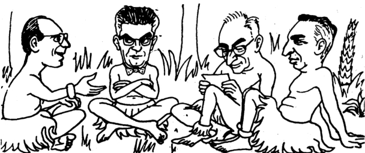
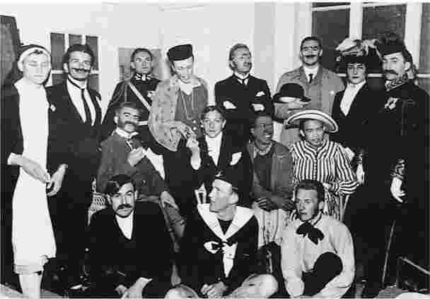

罗兰·巴特于1980年去世，享年65岁。当时他任职法兰西学院教授，这是法国学术体系的最高位置。他曾以对法国文化做出切中肯綮、蔑视权威的分析而闻名，但到了去世的时候他自己也已经成为了现行文化体制的一部分。他的讲座吸引了人数众多、背景各异的听众，从外国旅游者到退休中学教师再到知名学者。他在报纸上撰写专题文章，对日常生活的各个方面进行了深入思考。他的《恋人絮语》作为一种恋爱“修辞”，不仅成为畅销书，还被搬上了戏剧舞台。
在法国之外，巴特继萨特之后，成为法国知识分子的标志性人物。他的著作被翻译到多个国家，并拥有众多读者。他的论敌之一韦恩·布斯称他为“或许是对当前的美国批评产生最大影响力的人”，但他的读者群体远远超出文学批评家的范畴。 [1] 巴特是具有国际声望的大人物，是一位现代大师。但他究竟擅长什么？他以什么而知名？
事实上，巴特的声誉源自几个相互矛盾的方面。对于许多人来说，他首先是个结构主义者，或许是唯一纯正 的结构主义者，他提倡对文化现象进行系统、科学的研究。他同时也是符号研究（对于符号的科学研究）最知名的倡导者，勾勒出了一种结构主义式的“对于文学的科学研究”。
不过，对于另一些人来说，巴特代表的不是科学，而是愉悦：阅读的愉悦，以及读者为了获取可能得到的愉悦而进行个性化解读的权利。巴特反对以作者为中心的文学批评，那种批评一心想要复原作者的思想或意图；巴特提出读者的重要性，并且提倡那种为读者提供了积极的创造性角色的文学。
另外，巴特素以支持先锋派文学而闻名。法国的批评家们抱怨阿兰·罗伯——格里耶以及其他新小说 的实践者所写的小说难以卒读——他们认为这些作品只是把一些令人困惑的描述胡乱堆砌在一起，缺少可以辨识的情节，也没有引人瞩目的角色。但巴特不仅称赞这些小说，把他本人的前途和这些作品的前途联系在一起，而且还提出，正是这些向我们的预期发起挑战的“难以卒读”的作品最完美地体现了文学的目的。巴特提出了“可读”文本和“可写”文本这两个相对立的概念。前者指顺从传统代码和可理解性模式的作品，后者指实验性作品，我们不知道该怎么去阅读这类作品，只能（实际上必须）在阅读的时候去写作这些文本。
然而，令巴特对于先锋派的支持变得广为人知的几部著作并没有讨论当代的实验性作家，而是探讨了经典的法国作家，如拉辛和巴尔扎克。巴特最爱的是“从夏多布里昂到普鲁斯特的法国文学”，而普鲁斯特是他最挚爱的作家。人们甚至怀疑，他宣扬先锋派并且公然否定早期文学的做法是一种明智的策略，这一策略（有意或无意地）创造出一种批评氛围，由此他能够在后来把关注的焦点重新转回到那些早期作家身上，并且以新的方式来解读他们的作品。
最后，巴特还以“作者之死”的代言人形象而知名，所谓的“作者之死”是巴特提出的一个说法，其目的在于消除作者在文学研究和批判性思维中所处的核心位置。他在1968年写道：“我们现在知道，一个文本并非释放出单一的‘神学’意义（一位作者——上帝想要传递的‘讯息’）的一连串词语，而是一种多维度的空间；在这个空间中，多种写作（均非原创）相互混合、碰撞”（《意象、音乐、文本》，第146页）。他特别强调，我们应该研究文本，而不是作者。
然而，这位广大作者的公敌却是一位著名的作者，他的各种著作展现出了个人风格和眼界。许多作品非常特别，很难用现有的文体类型来归类：比如，《符号帝国》把他在日本旅行期间的见闻与他对于日常生活中的符号及其伦理意义的思考结合在了一起；《罗兰·巴特自述》回避了自传的种种惯例，以怪异的疏远姿态描述了一个名叫“罗兰·巴特”的人，描述他的生活及其作品；《恋人絮语》更像是恋人之间谈话的样本和程式，而不是对爱情的研究；《明室：摄影札记》是巴特对于他所钟爱的相片的思考，而不是对于摄影艺术的分析。这些独特而动人的作品是一位作者 想象力的产物，写出这些作品的人不仅是位法语散文大师，而且也具有独特的生活体验。
这就是罗兰·巴特，一个矛盾的人物，他提出了各种错综复杂的理论和立场，对此我们必须加以阐述。我们该如何来评估这样一位人物？当被问到巴特究竟擅长什么的时候，人们往往回答“文学批评”。（在法兰西学院，他自命为“从事文学符号研究的教授”。）但这一头衔并不能涵盖他的成就，他的声望并非源自文学批评领域内的权威性成果。他的影响力来自他所勾勒和支持的多个研究设想，这些设想促使人们改变了思考各种文化客体的方式，从文学、时尚、摔跤和广告，到自我、历史和自然等概念。
人们或许可以称赞巴特是许多学科的创始人，是许多研究方法的倡导者，但这种说法同样不能令人满意。每当巴特强调某种新的、具有远大目标的理论设想时——比如，关于文学的科学研究、符号研究、关于当代神话的科学研究、叙事学、文学语义的历史、关于分类的科学研究、文本愉悦的类型学——他又迅速地转向了其他设想。他不断地抛弃他曾经推动发展的研究内容，时常以挖苦或轻视的态度来评点他本人之前的想法。巴特是一位对他人产生了深远影响的思想家，但他却试图把他的影响消除在萌芽状态。他的一些理论设想取得了蓬勃发展，但这种发展却是在没有他参与，甚至是在他的反对之下获得的。
对于那些读过巴特的某一部作品并且被它预见的理论前景所激励的人们来说，巴特的做法让他们颇为恼火。他拒绝固定自己的立场，不断变换着自己的兴趣和态度，其目的不是在于纠正错误，而是在于试图回避过去。人们想要谴责巴特缺乏毅力，并且赞扬那些在葡萄园里苦干实干的人，他们没有回避艰苦工作去追求天边出现的诱人的新希望。但巴特之所以吸引我们，正是因为他能激发我们的思考，我们很难把他作品中的诱人之处与他不断采取新视角和放弃惯性感知的尝试区分开来。如果巴特长期致力于某些理论建设，他就不可能成为如此多产的思想家。
意识到这一点，巴特的铁杆支持者往往称颂他乐于改变和拒绝被固化的态度，他们没有把巴特的写作当成需要我们来评价的分析性研究（评价的依据是这些作品对于我们的理解力所做出的贡献），而是把这些文本看作是一次次的个人冒险。实际上，为了应对巴特的各种作品所表现出来的自相矛盾，他们采取的办法是在这些作品中寻找一种个性，一种个人化的学术风格。他们称赞他不断改变的做法，而不是他的结构性分析；他们称赞他敢于追随自己的兴趣和愉悦，而不是他在这个或那个领域内所取得的成就。
在法兰西学院的就职演说中（通常一位新任职的教授会阐述他的研究方法），巴特没有谈论如何发展一种文学符号研究，也没有说要拓展知识，而是谈到了遗忘 ：“我承诺要让自己负载起任何生命都具有的那种力量：遗忘”（《就职演说》，第45/478页）。他提出，他不打算传授他所知道的内容，而是要强调“消除 已有知识 ，顺从不可预见的变化，遗忘将这些变化强加给了人们所积淀的知识、文化和信仰。”巴特借用了拉丁语中意为“智慧”的词“sapientia”，用来指称这个遗忘的时刻，这种消除已有知识的行为；他用自己的话来界定这个词：“sapientia：没有权力，有些许知识，些许智慧，还有尽可能多的情调”（《就职演说》，第46/478页）。
巴特总是显得情调十足，尤其是他那些出人意料的表述方式，似乎让他失去了保护。巴特在本质上是个有着特别情调的名人，这一看法得到了公认，因为它迎合了两类有影响力的人群：首先是巴特的崇拜者，对于他们来说，他的每一部作品都是一首《罗兰之歌》；其次是记者，他们可以更加自如地谈论一位名人，而不是一个理论家。巴特“消除已有知识”的说法以及他放弃之前立场的做法，让法国新闻界可以套用一个陈旧的模式——愤青转变为绅士——来描述巴特的职业生涯：在厌倦了体系、原则和政治之后，他决定与社会和平共处，从而享受社会带来的愉悦，并追求一种个人的满足。他在早期和中期所采取的政治立场和社会批判只是他的众多情调中的一部分，成熟后的巴特自然忽略了这些情调，他回避各种理论，从而养成了自己的个性。他对于先锋派文学的“教条主义式”的倡导可以被视为一种青年人的热情，随着年岁渐长，他自然就转向了经典法语文学。“消除已有知识”的做法推动巴特超越了每个立场和每个理论设想，这被看作是为法国文化和法国社会所具有的终极价值提供了佐证，巴特最终还是接受了这样的价值观。到他去世的时候，这位资本主义社会及其神话的批评家已经被政治家称赞为法国文化的温和的代表人物了。
法国以外的读者或许没那么在意媒体如何看待巴特的转变，也不在意他的政治立场，他们甚至不关心他与先锋派的确切关系。巴特于1971年声称，他的历史位置“在先锋派的后场”（《回应》，第102页）。既然本项研究旨在阐述巴特多变的理论立场和相应的贡献，这些问题当然是研究的首要任务。但如果人们打算阅读巴特的作品，就必须面对一个根本性的问题：该如何看待他的思想。巴特的崇拜者总是把他的作品看作是一种欲望的表述，而不是有待思考、发展和反驳的观点，这种做法导致他们低估了这些作品的重要性；与此同时，巴特本人嘲讽自己过去的做法也推动了这种倾向。比如，在《罗兰·巴特自述》中，他对一些二元对立的术语（比如可读 与可写、内涵 与外延、隐喻 与转喻 等）进行了反思，这些术语的区分在他的早期研究中曾起过重要作用。在一段题为“伪造”的文字中他把这些对立术语称为让他得以持续写作的“生产的修辞”。“这种对立被铸造成 形 （就像一枚硬币），但人们并不想兑现它。那么它有什么用？很简单，它的作用在于说出某些内容 ”（第96/92页）。在题为“写作机器”的段落中，巴特谈到了他对于寻求对立概念的热情。“就像魔术师的手杖，概念，尤其是成对的概念，催生 了一种写作的可能。”他说，在这里存在着说出某些内容的可能性。“因此，作品靠着概念带来的冲动、持续不断的兴趣和短暂的狂热向前推进”（第114/110页）。
和《罗兰·巴特自述》中的许多内容一样，这种反讽性的自我揶揄十分诱人；在成熟后的巴特的鼓励下，人们觉得自己比年轻时候的巴特更加厉害，因为后者把自己的狂热误当成有效的概念。但是，在智识方面充满好奇的读者至少应该停下来提出疑问：这是否就是解读巴特的最佳方法？巴特对于自己以往作品的去除神秘性的做法是不是反倒产生了重新神秘化的结果——一种机敏的、个性化的回避？考虑到对某个作者采用的概念进行评估所涉及到的困难，人们往往武断地宣称这些概念纯属一时冲动，或者体现了一种想要写作的潜在欲望，这种欲望将某位作者与其他作者联系在一起。巴特嘲讽自己过去立场的做法或许创造了一种巴特式的神话。《罗兰·巴特自述》中的片段甚至可以被解读为一种炫耀的形式，就像一个骑自行车的年轻人大喊着：“妈，快看！没用手！”巴特也在大喊：“妈，快看！没用概念！”一个作家完全可以愉快地宣称，他的作品并没有依靠重要的理论来支撑，而是依赖短暂的狂热；作品的声望不取决于其认知价值，而是取决于概念带来的冲动和持续不断的兴趣。
即使巴特真的这样来看待他本人的作品——他的写作过于戏谑，难以得出确定性的结论——我们也不必同意他的看法，不必把他的作品当作是一系列的冲动，并且认为它们的重要性比不上它们所表达的基本欲望。虽然怀着发现“真实的巴特”的希望去寻找作品中统一的、潜在的欲望，对于研究者来说是一种挑战，但更忠实于巴特的做法——忠实于他的全部作品，忠实于他和他所处的世界之间的关系——是保持他的变色龙形象，他怀着活力和创造力加入到一系列相去甚远的批评实践中。人们不该寻求一种简化的一致性，而是该让巴特保持他的活力，他的真正形象应该是个多面手，参与各种有价值的总体性的理论建设，这些理论未必具有共同的特性。
如果我们必须寻找一致性，如果我们依然觉得有必要用一个短语来总结巴特，我们或许可以（像约翰·斯特罗克在一篇有用的文章中所做的那样）称他为“无与伦比的激活文学头脑的人”。 [2] 或者我们用一个更好的说法，借用巴特本人对于作家的总体评价：我们可以称他是“一个公共实验者”（《文艺批评文集》，第10/xii页）。他以公开的方式，为了公众，对各种思想和体系进行实验。一篇以《何为批评？》为题的文章进一步发展了这一想法。巴特认为，批评家的任务不是发现作品的秘密意义——关于过去的真相——而是要为我们所处的时代来建构一种可理解性（《文艺批评文集》，第257/260页）。要想“为我们所处的时代来建构一种可理解性”就是要发展若干概念框架来处理过去和现在的各种现象。可以说，这就是巴特最主要的活动，也是他最持久的关注。在一次访谈中，他这样说道：“在我的一生中，最吸引我的是人们如何让他们的世界变得可以理解”（《访谈录》，第15/8页）。他的写作试图向我们展示，我们如何做到这一点，特别是我们正在 这样做：那些对我们来说看似自然的意义实际上是文化的产物，是概念框架造成的结果，我们对于这些概念框架太过熟悉，以至于忽略了它们的建构本质。巴特对现有的观念发起挑战，提出新的视角，从而揭示出让世界变得可知的习惯方式，并且尝试加以修正。把巴特当作一位公共实验者，把他的写作看作是在建构我们所处的时代所需的可理解性，这样的看法有助于解释他的作品中许多令人困惑的内容，同时又能够保留其中包含的各种立场和视角。接下来，我将描述巴特所探讨的各种研究设想，以便来支持上述说法。
不过，我还是先来概述一下巴特的生平，有了相应的参照点，我们的后续讨论才能顺利进行。在巴特成名之后，采访者频繁问及他的私人生活，起初他拒绝回答，但很快就打开了话匣子，并且一直强调“任何传记都是不敢说出名字的小说”（《回应》，第89页）。在后面的章节中，我会讨论巴特的传记小说展现的文学品质（例如，在《罗兰·巴特自述》中）。但现在，我们所关心的是情节和一些醒目的主题。
巴特于1915年出生于一个中产阶级新教家庭。他的父亲是一位海军军官，在他未满周岁的时候死于一次军事行动，他从小由母亲和外祖父母抚养，在巴约纳市长大，这是法国西南部大西洋沿岸的一座小城。《罗兰·巴特自述》（书的序言警告说“所有这一切必须被视为小说中的人物所说的话”）中对于这段童年生活的论述强调了三点：音乐（巴特的姨妈是位钢琴教师，只要钢琴空着，他就会练习弹奏）、资产阶级闲谈（例如，来喝茶点的贵妇之间的交谈）和带着一丝怀旧心情回想起的童年见闻。在他九岁那年，巴特随母亲移居巴黎，她靠着装订书籍获得一份微薄的收入，而巴特的生活环境则换成了学校（定期放假，到了假期他总是回到巴约纳市）。在他十二岁那年，母亲爱上了巴约纳的一位艺术家，并且产下一子，也就是巴特同母异父的弟弟。终其一生，巴特一直和母亲及弟弟住在一起，但他从没有提及这个弟弟。巴特没怎么谈论他的学校生活，但他是个好学生。1934年，他完成高中毕业会考后，曾计划报考巴黎高等师范学校，法国最好的学生都在那里接受大学教育。但他感染了肺结核，被送往比利牛斯山脉进行治疗。一年后他回到巴黎，开始大学生活，他学习法语、拉丁语和希腊语，同时他协助创办了一个剧团，并花费大量时间来演出古典戏剧。
1939年战争爆发的时候，巴特被豁免兵役，他在比亚里茨和巴黎两地的公立中学里教书，但到了1941年，由于肺结核复发，他被迫中断教学。随后的五年里（大体上就是德军占领法国的时段），他的大部分时间都在阿尔卑斯山的疗养院里度过，他在那里过着规律的生活，读了许多书。等到疗养结束的时候，他变成了（用他本人的话来说）萨特的支持者兼马克思主义者。回到巴黎后，他逐渐恢复了健康，并且获得在国外教授法语的职位，最初在罗马尼亚，随后到了埃及，那里的一位同事A.J.格雷马斯向他介绍了现代语言学的研究成果。
回到法国后，他在政府文化服务部门负责海外教学的分部工作了两年。1952年，他获得一笔研究资金，用于写作一篇词汇学论文，主题是19世纪早期社会辩论中所用的词汇。他的论文研究没有取得进展，他却出版了两部文学批评作品：《写作的零度》（1953）和《米什莱》（1954）。失去研究资助后，他为一个出版商工作了一年，其间写了大量文章，其中有多篇文章对当代文化进行了简要研究，后来以《神话学》（1957）为题，结集出版。1955年，朋友帮他拿到了另一笔研究资金，这次需要他对时装进行社会学分析，最终他写出了《流行体系》（1967）。1960年，在他的研究资金用完之际，他在高等实用研究院（这所学校在法国的大学体系中处于边缘位置）获得了一个教职，1962年起成为这里的固定教师。与此同时，他发表了以新小说和其他文学主题为研究对象的多篇论文，后来以《文艺批评文集》（1964）为题，结集出版。他试图在《符号学原理》（1964）中勾勒出一种关于符号的科学研究。此外，他还写了一部引发巨大争议的作品《论拉辛》（1963）。
1965年之前，巴特在法国的知识圈中是个十分积极却又处于边缘的人物，但就在那一年，索邦大学的一名教授雷蒙德·皮卡尔出版了一本著作，题为《新批评还是新欺诈？》，书中对巴特批评尤多；这些指责随后被法国新闻界一再炒作，使巴特变成了文学研究领域内激进、不当、蔑视权威等做法的代表人物。虽然皮卡尔的首要目的在于反对巴特以精神分析话语来讨论拉辛的作品，但争论迅速演变为一场广义上的古今之争，巴特的“恶”名由此变得众人皆知。在《批评与真实》（1966）中，巴特答复了皮卡尔的质疑，并且提出要建立一种结构主义式的“对于文学的科学研究”；在之后发表的论修辞和论叙事的文章中，巴特对这一研究进行了初步探讨。随后两年里，他又出版了另外两本与结构主义研究相关的著作：《萨德、傅立叶、罗犹拉》（1971）和《S/Z》（1970）。前者出人意料地把这三位思想家放在一起，将他们视为话语体系的共同创始人；后者是巴特最为详尽的文学分析作品。与此同时，前往日本的旅行造就了《符号帝国》（1970）这本小书，巴特声称，他在写作此书时所获得的快乐远胜过其他作品。
到了20世纪60年代后期，巴特已经成为巴黎名流，与克劳德·列维——斯特劳斯、米歇尔·福柯和雅克·拉康齐名。各个国家和地区都争相邀请他讲学，起初他接受了一些邀请，前往旅行并演讲，他想享受异国他乡带来的新鲜感受以及别国语言的朦胧感觉，同时又无须与不相识的人进行交谈。但他从来都不是像福柯那样热情的表演者，也不像拉康那样喜欢别人用恭顺的态度来关注他。巴特很快就厌倦了旅行演讲，宁愿待在巴黎附近，他在这里度过了大半生，在高等实用研究院主持研讨课，并不时与朋友们见面聚会。

图2 结构主义的时髦人物：福柯、拉康、列维-斯特劳斯和巴特。
在他作为结构主义者的名望如日中天之际，巴特出版了给他的名声带来巨大改变的两部著作：《文之悦》（1973）和《罗兰·巴特自述》（1975）。前者就阅读和愉悦的思考澄清了巴特思想中的伦理层面；后者对于日常经验进行了优雅的理论化分析，并且采取了自我贬低的口吻，这些做法使他以作家的新面目出现在公众面前。1976年，他被任命为法兰西学院教授；1977年在瑟里西举办了为期一周的研讨会，专门讨论他的作品。但巴特拒绝沾染学究气，迅速推出了《恋人絮语》（1977），对情人之间的感性语言进行探讨。在文学界和理论界的先锋派看来，这是最不值得关注的话题，但这部非正统的作品却备受欢迎，在它的推动下，巴特的公众形象拓展到了学术领域之外。
1978年，巴特作为作家的地位再次得到巩固，但原因却让他感到不快：一部名为《轻松学会罗兰·巴特》（类似于《轻松学会法语》）的戏仿之作于当年出版，它宣称以十八节简易课程的形式，教会读者如何使用罗兰·巴特所用的语言，一种似是而非的法语。巴特现在已经是个值得模仿的文体名家。采访者一再询问，他是否打算写一部小说。虽然巴特通常都予以否定，但他还是在法兰西学院花了几堂课的时间来谈论自己“小说的准备工作”，讨论的内容包括作家如何从视觉上想象他们正在创作的内容，以及他们如何以各种方式来实现这些内容。在巴黎，精神分析理论是知识界的时髦话语，但巴特却成了传统文学价值的主要倡导者，同时也是以非精神分析模式对日常生活进行研究的主要理论家。《明室：摄影札记》（1980）是巴特向母亲致敬的作品，他的母亲于1977年11月去世，这对于巴特而言是个重大打击，由此他写了这部论摄影的作品。下一步他将做什么？他的天赋将引领他走向何方？这些都是引起人们关注的谜团。
1980年2月，巴特与一些社会党成员和知识分子一起用完午餐后出门，穿过马路前往对面的法兰西学院，就在此时他被一辆洗衣店的卡车撞倒在街头。虽然他一度有所恢复，能够与来访者见面，但最终他还是在四周后去世。巴特的猝然离去让他的职业生涯变得更加令人困惑。虽然这不是那种某个学者在某个伟大项目的进行过程中被意外夺走生命的悲剧性死亡，但人们无法确信，究竟巴特是否已经写出了他最好的作品。谁又能预见，他下一步打算做什么？他又会带给我们什么样的实验作品？
如他本人所言，三个因素在巴特的一生中起到了重要作用。首先是在窘迫的环境中，一个中产阶级家庭所面临的寻常无奇、令人忧虑的贫困状况。巴特在自述中这样写道：“对他的一生产生重大影响的问题，毫无疑问是金钱，而不是性”（《罗兰·巴特自述》，第50/45页）。巴特并没有谈论悲惨的生活，而是提到了财政问题带来的窘困——比如，省吃俭用以购买课本和鞋子——他把这种早期生活的体验与他后来对于安逸 生活的喜好联系在一起，因为安逸正是窘迫的反面（对于巴特来说，愉悦意味着安逸，而不是奢靡）。
第二个因素是肺结核，在他的学术道路上，肺结核两次阻碍了他的发展；更重要的是，这种疾病把一种特殊的生活强加给他。巴特说，他的身体属于托马斯·曼在《魔山》中描绘的那个世界，在那里，肺结核的治疗真的是一种生活方式。巴特逐渐适应了一种有规律的生活，时刻注意着自己的身体状态。在这样的生活里，闲谈多，大事少，好在还有朝夕相处产生的友情。
第三，巴特委婉地谈到了一段“职业动荡”时期：从1946年到1962年，他一直靠着短期收入来维持生活，既没有明确的方向，也没有稳定的工作。后来，当他名声鹊起，有机会获得明确的公共角色和职业角色时，他却没有如人们所料，充分利用他的知名度。他谈到了对于情调（而不是权力）的渴望，并且真的在设法回避他可能获取的权力——虽然他的谦逊本身具有一种特别的力量。

图3 疗养院举办的化装晚会。巴特在最右边，他装扮的人物是法兰西文学院成员巴雷斯。
人们可以把巴特生活中的这几个方面与他的写作联系起来，从他的生活经历中推断出他所采取的立场。巴特本人有时也会做此类尝试，但结果却难以令人信服：每种所谓的原因——贫困、肺结核、职业动荡——都可能产生无数的结果；对于巴特的写作来说，最主要的影响还是来自每部作品所涉及的理论设想。巴特具有惊人的创造性，但他首先对于周围正在发生的事有着敏锐的观察，能够捕获讯息，加以思考，最后创造性地把它用作新的理论设想中的关键概念。他具有超人的识别力，知道什么事物让人惊奇同时又充满诱惑，知道该利用 什么样令人震惊的悖论或矛盾。因此，他写作的背景（不管是他自己的处境，还是他要反对的内容）至关重要。他展现出特殊的技艺，特别适合对我们这个时代的可理解性进行实验。